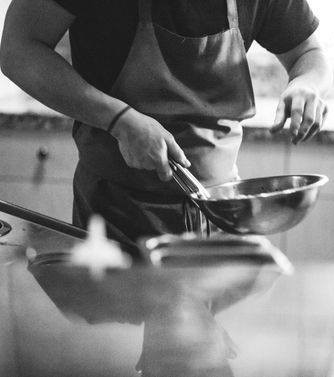
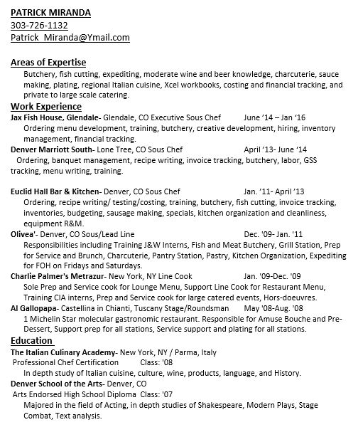
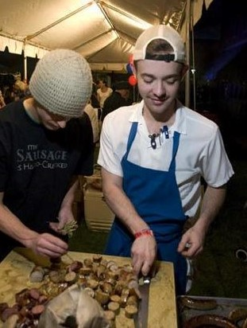
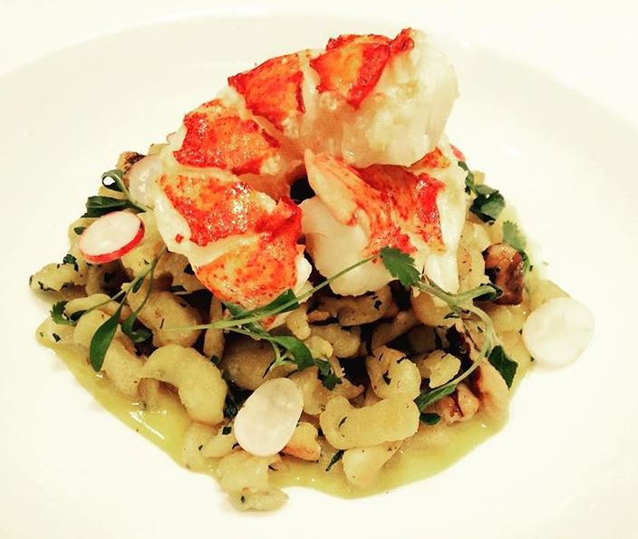
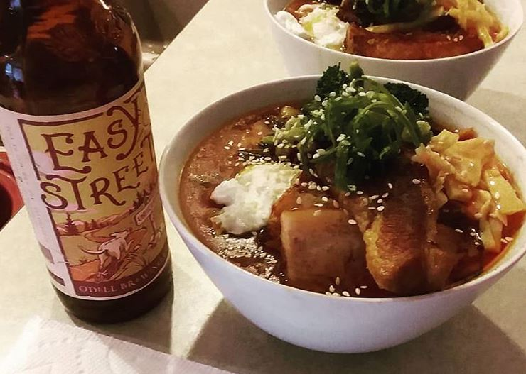
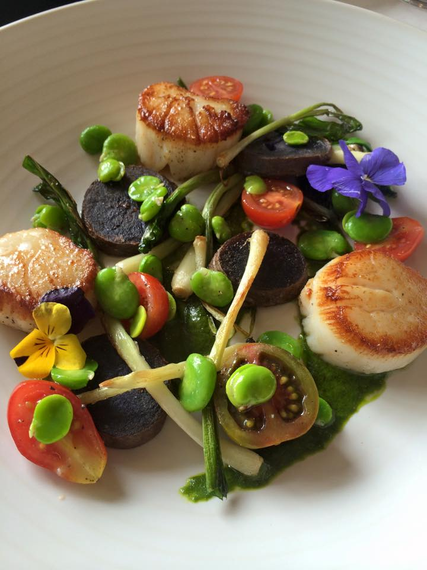
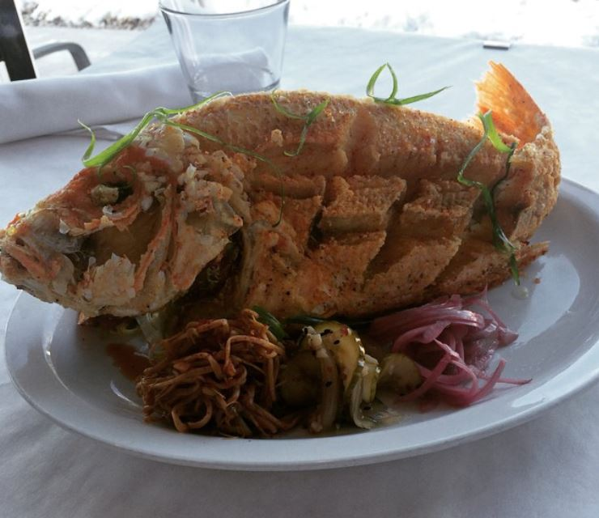
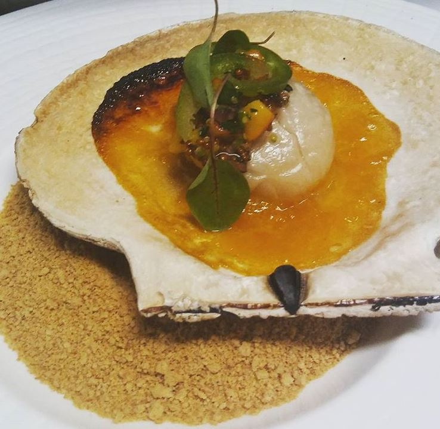
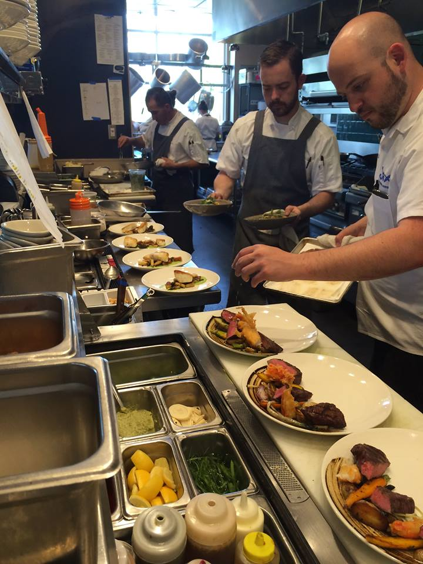

Cook Book
Making Stuff Up
On new discoveries, long days, and not giving up.
By Patrick Miranda

Making Stuff Up
By Patrick Miranda

Summer Halibut
Ingredients:
- Halibut
- Pea Puree
- Hand Made Gnocchi
- Foraged Mushrooms
- Pea Sprout Salad

Lobster Spatzle
Ingredients:
- Butter Poached Lobster Tail
- Coriander Spatzle
- Hot Mustard Beurre Blanc
- Breakfast Radish
- Pinenuts

Ramen at Home
Ingredients:
- Pork Shank Broth
- Poached Egg
- Braised Pork Belly
- Shredded Pork
- Scallion
- Tonkatsu Noodles
- Sesame Oil
- Pickled Bamboo
- Home Made Kim-Chi
- Broccoli

Scallops
Ingredients:
- Diver Scallops
- Grilled Ramps
- Purple Potatoes
- Baby Heirloom Tomatoes
- Fava Beans
- Basil Salsa Verde
- Edible Flowers

Thai Style Fried Snapper
Ingredients:
- 2 Lb. Whole Snapper, gutted
- Seasoned Rice Flour
- Kim-Chi
- Pickled Red Onions
- Pickle Chips

Scallops Poached in Shell
Ingredients:
- Live Diver Scallop
- Peach-Bacon Mostarda
- Jalapeno-Peach Puree
